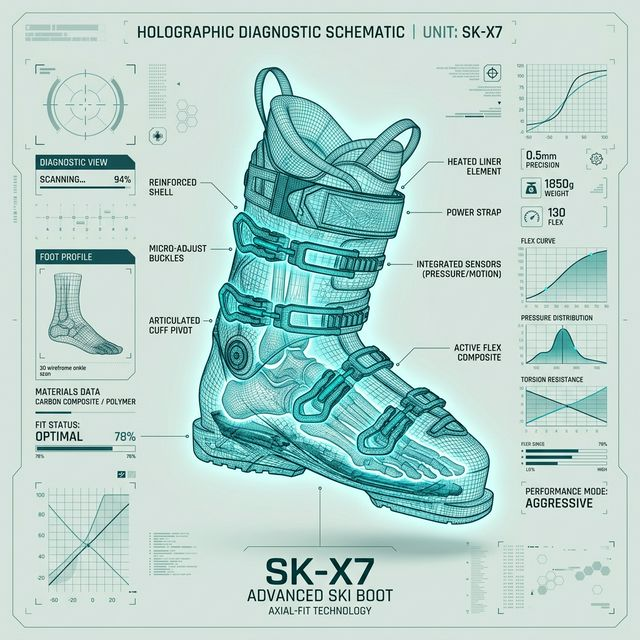
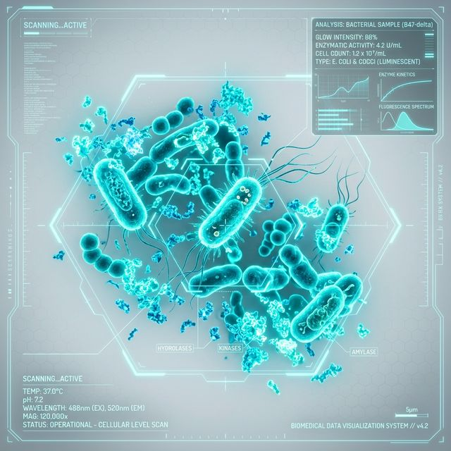
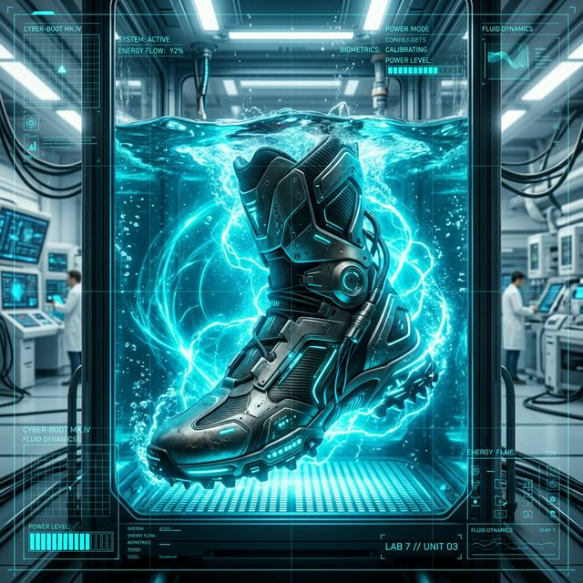

МOЛЕКУЛЯРНАЯ
ЧИСТОТА
Первая биотехнологическая система ухода за спортивной экипировкой. Мы не чистим грязь — мы уничтожаем микроорганизмы.
Премиальный сервис обслуживания горнолыжных ботинок, шлемов и перчаток на курорте Красная Поляна. Поддержание идеального состояния инвентаря на протяжении всего сезона.
- // ТЕХНОЛОГИЯ ГЛУБОКОГО ПОГРУЖЕНИЯ
- // ФЕРМЕНТАТИВНОЕ РАСЩЕПЛЕНИЕ ОРГАНИКИ
- // ЗАЩИТНЫЙ БАРЬЕР С ИОНАМИ СЕРЕБРА

Био-нагрузка.
То, что скрыто внутри.
Влажная среда ботинка — инкубатор для колоний микроорганизмов. Пот и органические частицы проникают в пористую структуру пены внутренника.
Обычная сушка лишь консервирует проблему, позволяя бактериям и грибку размножаться в глубоких слоях стельки и лайнера, создавая неприятный запах, который невозможно удалить обычными спреями.

Почему старые методы не работают
Спреи
Маскируют следствие, а не причину. Создают липкий слой отдушек, не проникая глубже 2мм.
Бытовой озон
Работает поверхностно. Не удаляет органический субстрат — питательную среду для бактерий.
Химчистка
Агрессивная химия разрушает технологичные мембраны и пластификаторы материалов.

Не чистка.
Дезинфекция.
Наш подход полностью исключает агрессивную химию и грубое механическое воздействие. Мы создали принципиально новую категорию ухода за элитной экипировкой, работая на молекулярном уровне.
Это синтез биотехнологий и высоких стандартов очистки. Вместо того чтобы пытаться временно заглушить последствия, мы извлекаем биологическую основу из самых глубоких слоев материалов.
Пятиэтапный регламент обслуживания
В основе нашего сервиса лежит строгий лабораторный регламент. Мы отказались от поверхностного распыления в пользу технологии полного погружения в активную среду.
Предстерилизационная подготовка
Растворение белковых и жировых наслоений на молекулярном уровне.

Уничтожение микроорганизмов
Полное погружение в медицинский раствор. Уничтожение 99,9% патогенной флоры.

Защитный барьер
Промывка ионизированной серебром водой для создания длительного барьера.

Термобезопасный цикл
Мягкий терморежим и озонирование без риска деформации материалов.

Стерильный барьер
Индивидуальная герметичная упаковка. Защищает экипировку до момента примерки.

Безопасно для Bootfitting
Процесс проходит при температуре до 36°C. Это исключает риск деформации термоформуемого пластика и высокотехнологичной пены.
Гарантия сохранности
Наши регламенты гарантируют защиту гидрофобных покрытий, сохранение формы индивидуально отформованного пластика ботинок и целостность высокотехнологичных тканей.
- // СОХРАНЕНИЕ МЕМБРАН
- // ЗАЩИТА ТЕРМОПЛАСТИКА
- // БЕЗОПАСНОСТЬ ПЕНЫ
Фокус на деталях
Мы стираем границу между новой вещью и той, что служит вам уже не первый сезон. О свежести, гигиене и сохранности вашего инвентаря позаботятся биотехнологии.
ЗАБРОНИРОВАТЬ СЕРВИСПолный цикл дезинфекции пары ботинок + герметичная упаковка.
ИНИЦИАЛИЗИРОВАТЬ ПРОЦЕССГотовы вернуть чистоту?
Оставьте заявку, и мы согласуем время приема в нашей лаборатории.